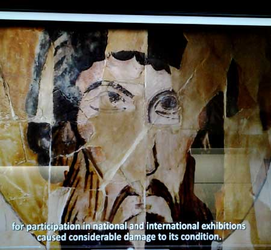

<div class="row">
    <div class="col-xs-12 col-md-12 col-lg-12">
        <p>Къде се намира прочутата икона на св. Теодор?</p>
        <form class="form-horizontal">
            <div class="form-group">        
                <select class="form-control">
                      <option value="">Отговор едо</option>
                      <option value="">Отговор две</option>
                      <option value="">Отговор три</option>
                 </select>
            </div>
        </form>
    </div>
</div>
<div class="row">
    <div class="col-xs-12 col-md-12">
        
    </div>
</div>
<div class="row">
    <div class="col-xs-12 col-md-12">
          <h4 class="text-center"><small>"Именника на българските ханове".</small></h4>
    </div>
</div>